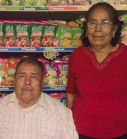

About Us
We’re a family owned grocery store in Wimauma, FL, proudly serving our community since 1993. From everyday essentials to unique Latin American goods, fresh produce, handmade cakes, and authentic Mexican dishes, we’re here to share great food and service with everyone who walks through our doors.
Our Story
Jose’s Market was started in 1993 by Jose and Reyna Rocha. Back then, it was just a small wooden shed on the corner of 674 and West Lake Drive, offering produce to the local community. It was one of the first spots in the area where people could buy groceries without having to travel far.

Don Jose comes from a family of butchers. He learned to cook carnitas and chicharrones, and we’re still known for them today. That tradition has been passed down to his children.
For many years, the store was run entirely by family, including children, grandchildren, and in laws.
Growth
Over the years, we have expanded and improved our store to offer a larger space and a wider selection of products. Our team has also grown, and we’re grateful to have wonderful staff who help us deliver excellent service every day.